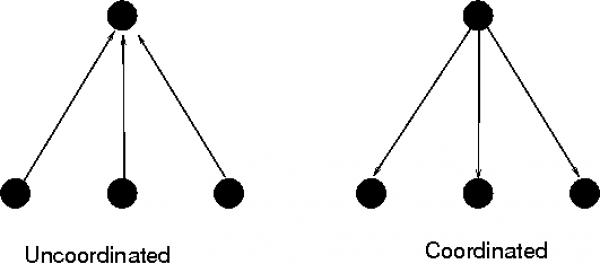
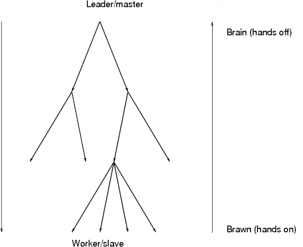
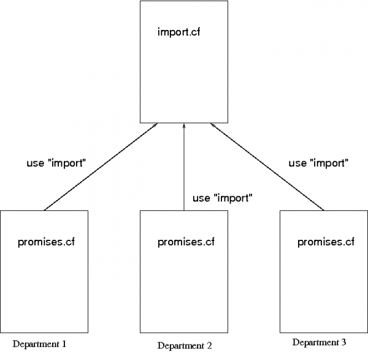
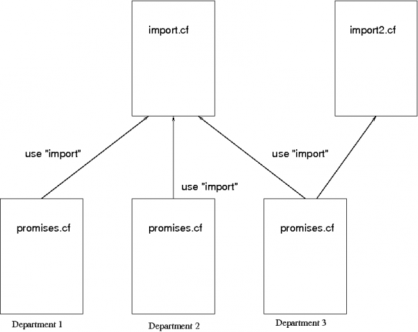

Orchestration
What is organizational complexity?
Complexity is a measure of the amount of information needed to explain something. It implies a `mental cost' (and therefore a time and monetary cost) to comprehend a pattern of structure and behaviour.
The term organization has two distinct meanings in English: it can be intended as a euphemism for an institution or a business, and it can be intended to mean an ordered structural pattern (i.e. the state of being organized). To avoid confusion, we shall refer to businesses and public institutions as enterprises, and use the term organization to mean an architectural pattern with a certain level of complexity.
Organizational Complexity is therefore the amount of information, and hence cost, needed to manage an enterprise or system. In information science, the complexity of a system is commonly defined as the length of the shortest document that fully describes it. A complex system requires a long document to capture its workings; a simple system requires only a short document.
What is federation?
A federation is a pattern of organization obtained by merging a number of initially independent parts. The implication is that the resulting organization is not a singular rigid unit, but rather a more loosely coupled collective of autonomous parts.
Federation is a natural structure for any enterprise that has parts with fundamentally different functions or orgins. It can also be a stepping stone on the way from a set of independent actors to a state of unified integration.
Companies that merge or acquire other companies, as well as companies that reorganize to outsource tasks are natural candidates for federated management.
Promise theory predicts that a federated organization is naturallyservice oriented, with two main architectures:
The different parts of the collective bind together by promising each other services.
The parts offer services to external parties, but are bound together by promising to coordinate with a central entity.
Coordination, hierarchy and centralization
Federated parts of an enterprise are said to be coordinated by an entity, if they receive common information from it. Merely delivering services (i.e. keeping promises) to a common entity does not lead to coordination. Think of an orchestra. The conductor does not bring about any coordination simply by listening, but rather by providing common signals to the federated agents. On the other hand, the conductor is a bottleneck who throttles the productivity of the federated agents. If the agents rely too much on the conductor, or are discouraged from acting independently, the amplification of effort is lost.

The need for coordination is often exaggerated in human organizations – it comes from an unrealistic desire to absolutely determine the outcome of decisions. Realistically, it is only a means to bring consistency to distributed parts.
In ITIL and current IT parlance, a central hub containing coordination information is called a Configuration Management Database (CMDB). The term CMDB refers to a range of quite different approaches to coordinating information that will not be discussed here. In Object Orientation, the term inheritance is used to signify the use of common information by federated parts.
It is possible for federated parts to inherit coordinating information from more than one source, just as it is possible for someone to have two different jobs. In that case, one must be careful to avoid conflicting directions. As organizational complexity grows, the possibility of conflicting direction and expectation also grows unless strict principles are adhered to.
Promise Theory tells us that such conflicts can only be resolved by a party receiving information, not by the parties sending it. This leads to the model known as `voluntary cooperation' used by CFEngine, which implies that each federated part must effectively choose which inputs it is willing to use from external parties.
The Authority Paradox
For some, the idea that an organization should be built on voluntary cooperation sounds wrong. However, no matter how much we might crave certainty of outcome, making demands on the compliance of federated parts does nothing to improve that certainty; indeed, it can have the reverse effect. The confusion lies in a misunderstanding of desired authority over the actual power to change, i.e. in what is intended or desired and what is actually possible. Promise Theory resolves this confusion by building a model based directly on the agents that can effect change.
Authority is about who, in an enterprise, may decide what is intended. Most people perceive authority through hierarchies or `chains of command' in which the top of the hierarchical pyramid is the master, and the layers below must follow: those at the top are more powerful than those on the bottom. This is a cultural prejudice. However this perception is, at best misleading, and in fact is incorrect.
Humans have been organizing things into hierarchies for most of recorded history. We have a deeply held notion that favours hierarchies as an organizational form. It is worth examining why. In early times the upper echelons of hierarchy were the strong and the educated, served by a relatively unspecialised workforce. They wielded their power by guile and by violent force, and the lower layers cowered in fear. From Kings and leaders to middle managers and class-system underdogs, institutions and government, documents and tables of contents, everywhere we look we see hierarchical structures.

Today, education and peaceful society turns the reality of the power hierarchy
upside down: the true specialists are at the bottom of the hierarchy, closer to
the levers and the expertise to effect change. Today low level' means more
specialised, not less educated. Low level experts are held together by
relatively unspecialisedmanagers' who serve mainly as coordinators and
communications links. However, the culture and perception of authority from the
top remains today.
These changes create a paradox in modern systems. The leadership of intent is assumed to come from above, but the real power to act is down below. This necessitates the binding together of organizations by a social contract of voluntary cooperation.
The same is true in computer systems. Most system designs assume that the point of command will be placed at the top of an organizational tree, and that every part of the system (represented in the branches and leaves) will follow the commands made from the top. This turns out to be a poor model because, in reality, the top has neither the knowledge nor the proximity to enforce changes below.
No central management of either enterprise or computers can force individual agents to comply with their wishes, without their low level consent. The perception of authority is thus only a fiction1.
The social contract
Social contracts lie at the heart of all human and computer organizations. For computers these contracts may be as simple as `access control settings', nonetheless there are human politics behind them. Most enterprises struggle more with their internal sociology (or politics) than with their technological solutions.
When an organization is formed by merging independent parts, this is especially important. The loss of identity and the feeling of loss of autonomy by these parts can fuel a breakdown of the social contract – i.e. a loss of loss of voluntary cooperation. In terms of system management, it therefore makes sense to preserve as much of the identity and autonomy of the parts as possible.
From an information perspective, this is also the lowest cost solution. The expertise to run the merged entity already exists within it2, and the proximity to make change is automatic, so to increase the organizational distance between decision, expertise and change will at best lead to increased overhead and at worst lead to the disconnection of decision making from expertise.
Low level autonomy is a cost saving strategy that reduces the overhead of management and improves the link between expertise and action.
Service oriented federation
Service oriented means business oriented. Let us now consider what this means for IT configuration. In particular, how should a CFEngine configuration be structured for an efficient organization? In the examples below, we shall adopt a service oriented view, in which an enterprise is organized as a set of federated entities, some of whom depend on each other for services.
Each part disconnected, providing services
Each federated entity manages its own promises.cf file. Each has, in effect, its own independent CFEngine configuration.
Independent configurations - complete autonomy
The configuration may still use resources provided by other entities' machines, but the other entities have no influence on the set of promises used to maintain any given one.
Disconnected parts inheriting a single baseline
A more common model for federation is to have a baseline constitution for all the parts of the enterprise defined by an umbrella organization. We can refer to this as a `global infrastructure' service.
Traditionally (i.e. hierarchically) one would think of this global entity as being superior to the other entities, i.e. making them subordinate, but this is not necessary, nor correct according to the reality. The role of the global service is rather to provide a point of consistent coordination, or centralized expertise to the others. Compliance with the proposals of the global coordinator will be assured if it plays a valuable roles.
Since the real power to change still lies in the hands of the federated entities, the global infrastructure unit must build a social contract with them to assure that its wishes are complied with. This goal is attended to by making the global entity a valued service for the federated entities. If the global service is perceived as being of no value, it will be ignored.
The next step from full autonomy is thus to use methods that have been defined by an enterprise-wide global infrastructure service.

#
# Federated promises.cf
#
bundle agent main
{
files:
"$(sys.workdir)/inputs/baseline.cf"
copy_from => remote_cp(
"/masterfiles/baseline.cf",
"central_service.example.com"
);
methods:
# Inherit the baseline constitution
"baseline" usebundle => company_baseline;
# All other local promises here ....
}
The CFEngine code snippet above represents the CFEngine configuration for any of the hosts in one of the federated departments. The configuration is extremely simple. It begins by downloading thebaseline.cfconfiguration, provided by the global infrastructure service, and then goes on to promise to use this as a `method'. Finally, the major part of the configuration is the set of special promises determined by the department itself. Federation is thus technically trivial. The difficulties are rather conceptual and sociological.
Let us remark on the likelihood for conflict. Although the source of the baseline is external, CFEngine configuration promises are always implemented by the federated departments themselves, none are (or can be) implemented by any external party such as the infrastructure service. Thus, it is the responsibility of federated departments to ensure that there are no conflicts between the baseline and their own promises. Moreover, as the parts have no power to change the baseline, but have agreed to follow it, the logical outcome must be that their own special promises must not conflict with the global infrastructure proposal. So all requirements are met without the need for central enforcement.
Handling multiple sources
Consider briefly the case in which there is more than one entity offering promise proposals. If a part of the federation serves two masters (see department 3 in the figure below), i.e. it promises to implement the wishes of two external sources, then those sources must either agree one hundred percent in their proposals, or they must not overlap at all. Since these `masters' may or may not be coordinated, it is up to the federated entity (department 3) to make the decision about which of the sources to obey.

The possiblity of conflict is easily handled in this architecture, because it recognizes that the federated entity must be the final arbiter of confict.
Global assurance
The lack of a hierarchy has not made information chaotic and disorganized. It has only provided a simple means of scalability and conflict resolution.
So what makes a federation different from a collection of completely independent enterprises? The answer to this question us usually some minimum set of common promises that all parts of the federation must keep: a baseline constitution.
Now, since the real power lies in the leaves of the organizational tree, but the designated authority lies at the root, the root needs to monitor the behaviour of the federated entities to ensure that this baseline constition is being complied with. This can be handled by performing an audit of the whole federation according to a single standard3.
CFEngine allows single-point-of-coodination monitoring of hosts by a variety of mechanisms, so that compliance can be assured.
Merging and dividing enterprises
Autonomy makes the merging and division of enterprise systems trivial. It is the way to enable out-sourcing and in-sourcing.
Imagine trying to combine two cups of coffee. Now try combining two combine two buildings or houses of cards. Coffee mixes easily because it is not full of dependencies (bonds) between its parts. Buildings are not fluid: at best one can build bridges between them, and try to build something else around them and then take them apart. The same applies to any system, whether human, software or mechanical.
To merge two systems or enterprises, it will be much simpler if they are fluid to begin with – i.e. they are basically composed of autonomous parts, loosely coupled, not rigidly joined together. Hierarchical organization is rigid, like a house of cards. Service-oriented systems are loosely coupled. By keeping the internal organization of systems as far as possible like independent service atoms, you facilitate reorganization by merging and division.
Why federation does not reduce predictabilty
The fear that many traditionalists have of federated management is that they cannot be certain of the outcome unless they have absolute authority. This fear is misplaced however. Certainty of outcome does not depend on whether authority is federated or not: there are many reasons why outcomes fail to be realized, including misunderstandings, accidents, force majeur and simple disagreements.
Certain knowledge can only be obtained by observing the results directly4, and repairing the system if promises have not been kept. Trying to enforce rules and command from above is an expensive and often ineffective way to manage systems, like swimming against the current. Trust in the federated system reduces the cost of verifying one's assumptions.
Hierarchies are sometimes used for oversight. Just as a conductor takes care of the big picture for his orchestra, so managers in a hierarchy can use their position to coordinate the larger picture for their subordinates. However, like the orchestra, the manager should not think that he has a real influence on the outcome. As long as each player has the script and the instruments, the music can go on for quite some time without its conductor. The role of a manager is one of advice.
Rules of thumb for scalable management:
Use autonomy to scale: proximity to the affected area avoids unnecessary dependency and transport of materials. Trust costs less.
If you need to enforce a common baseline (or constitution) for all, then arrange this as a service, not as a punitive force. Use local caching and the principal of convergence to a desired state (idempotence) to provide assurance without the cost of monitoring.
Trust lowers costs.
The benefits of federated management
Hierarchy is familiar, but not essential. A hierarchy is only a so-called `spanning tree' for a more general network of relationships. It may be thought of as one possible point of view, amongst many – one way of traversing a network of relationships.
A federated organization is automatically specialized into departments, each of which knows its requirements best.
One could take an enterprise and divide it into skill-areas or departments, then divide each department into geopgraphical teams. Conversely, we could divide the enterprise by country first and subdivide each country into regions, then divide these into skills. There is no unique way to traverse the enterprise. In truth, it is not a hierarchy, but a network of relationships.
If the federated teams or clusters in an enterprise have sufficient autonomy, both in resources and intended authority, then they don't need to communicate with or wait for other parts to do their jobs. Forcing that communication, due to lack of trust, will add overhead and increase costs, without improving the certainty of outcome.
Promise Theory tells us that organization by autonomy automatically indentifies the parts of a system that can operate independently – i.e., the essential `atoms' of the system. Thus, it is a method for identifying the raw material building blocks from which everything else can be built. Starting with these available raw materials, it encourages a rational approach to design of systems that are efficient and service oriented.
Footnotes
[1] Think of an orchestra. The real expertise lies in the players (below). The conductor (above) offers coordination and guidance, but has no real power to create music. Music is possible because each player has his/her own copy of the script, and can work autonomously, with only a little guidance.
[2] At least we may assume this.
[3] Think, once again, about the orchestra. The conductor observes the behaviour of each autonomous player to determine whether the orchestra is playing together and is playing the same piece of music.
[4] This is why society needs a police force to monitor and respond to those who do not obey proposed law – whether they have promised to or not. This is the role of CFEngine.